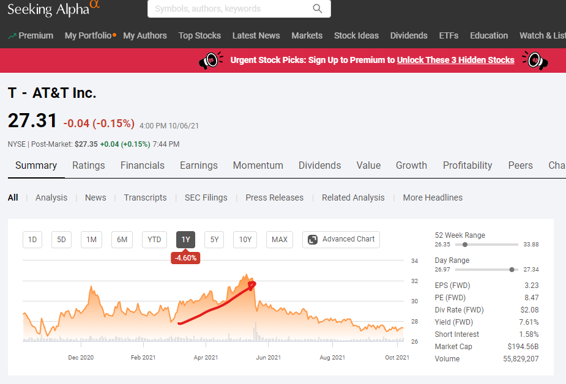
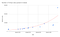

The Rise of Virtual Jobs in Indeed
Metrics about the evolution of the number of jobs posted as Virtual jobs

Now we all know how the pandemic crisis has impacted the job marketplace as well as every workplace because of the distancing constraints that were implemented to protect ourselves from this virulent virus almost every one of us started to work from home by adopting technologies like Microsoft Team, Zoom, Google Meeting and so one.
During this time we used our smartphones, computers, and laptops more than we used to do and as a consequence, we consumed networked data more than that what we used to during normal days. As proof of this shift, I suggest you see these charts of the stock prices of A&S and T-Mobile. Stock prices that can be taken as proxies for measuring how much data we consumed during this pandemic time

The topic of this article is not about finance but about the job marketplace because I was willing to share with you some concrete metrics about the evolution of the number of jobs categorized as being virtual jobs that were posted on indeed between 2012 and Now. The data is constituted by 16 data points of the number of virtual jobs posted during some defined month. Then it is just an estimation of the trend of growth of the number of virtual jobs posted that we will get not a precise and timely evolution.

You could see with these two charts, how the number of virtual jobs posted on indeed has been multiplied by a factor of 10X than the average number of virtual jobs that was around 20k to 30k per month.
This is the second article about metrics of the impact of the pandemic crisis on things that I a sharing with you, the first being this article about bankrupted businesses with an opportunity of doing business by using Leverage buyout or SPAC in order to save these businesses bankrupted by this difficult situation that our world has experienced this year.
PS: Please forgive me the length of this article but sometimes shorter can be better and let me tell you that writing this article made me think about testing a new publishing experiment titled metrics of Jobs then it is very likely that I will publish soon articles about metrics of specific jobs like software engineer and others like yours.